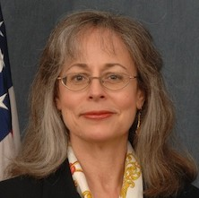

<div id="speakers">
<div class="cell">
<p><strong>Debra Sonderman</strong> is, as Director, Office of Acquisition and Property Management and Senior Procurement Executive, responsible for policy development and oversight of the Department of the Interior’s extensive acquisition, financial assistance, facility and property management programs. She is a co-system owner for the Department’s Financial and Business Management System, which integrates acquisition, financial assistance, personal and real property, core financials, budget execution, travel and reporting. She has led a number of technology initiatives at Interior, and co-chairs the Procurement Committee for eGovernment.</p>

<p>Ms. Sonderman has held a variety of acquisition and business positions with the Departments of the Treasury and the Navy, and the U.S. Small Business Administration. She was the first recipient of the Javits-Wagner-O’Day Liaison of the Year Award for her exemplary efforts on behalf of Americans with disabilities. Ms. Sonderman has been honored twice with the Presidential Rank Award – Meritorious Executive. She is a three-time recipient of the Secretary’s Bronze Executive Leadership Award, and received the Secretary’s Silver Executive Leadership Award. She has also been honored with a Presidential Award for Leadership in Federal Energy Management.</p>

<p>A graduate of the Catholic University of America, Ms. Sonderman has completed the Senior Managers in Government program at the Harvard University John F. Kennedy School of Government and the George Washington University Master’s Certificate in Project Management. She is a certified Project Management Professional, and is a member of the National Contract Management Association and the Senior Executives Association.</p>
</div>
</div>